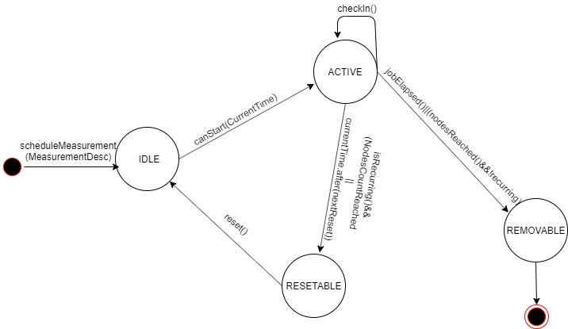

Project Breakdown
Front End(UI) by Clayton Sibanda
The user interface is the only point of contact that the user has with the application. A number of usability studies were done before it was developed. Before development an interactive high fidelity prototype was developed using Adobe xd. The interface was a web based application developed using the React framework. The web interface allowed users to schedule measurements like tcp speed test, DNS lookup , ping and http. The scheduled jobs would then be sent using AJAX to the server. The interface also allowed user to visualise the results of the measurements they scheduled.
Http Measurement Form

TCP Measurement Form

Measurement Orchestrator Design by David Kheri
The Orchestrator was responsible for the orchestration of measurements to be run on mobile nodes in the network based on some user defined fields. The chosen fields were start time, type of measurement to be performed, node count. The tool allowed researchers and network managers to schedule measurements to run in the network at specified times with the added option of repetition of a measurement at regular intervals.
Orchestrator State machine diagram
Server and Database Design by Meluleki Dube
As a whole, this was the data collection part of the system. A system for storing the data to be recorded was designed. A time series database InfluxDB was used for recording data as it comes in from the android application. The measurements scheduled from the web client we stored on mongodb and then dispatched from there to mobile phones. A file monitor to monitor pcap new pcap files being created from a remote server was also built so that the files can be analyzed and stored on the database as well.